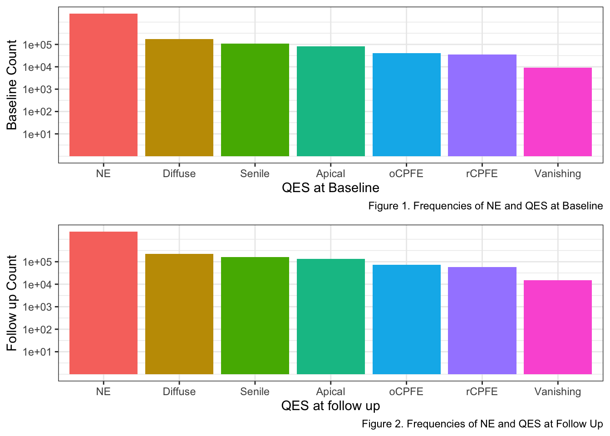

Longitudinal Analysis of sLTPs/QES
Clement Mugenzi
8/3/2020
Introduction
This document explore the longitudinal progression of emphysema subtypes (sLTPs/QES) over time - from either baseline or any other QES form to after 5 or 6 years later and so on. The dataset is comprised of CT scans from COPD patients.
Different patients have different proportions on emphysema, so that is why also different pixels (corresponding to the number of observations) were recorded - What I call multiple measures. In other words, different patients had different number of QES pixels labeled for their lungs.
Data Description:
IDNO: Patient ID Number
X,Y,Z: Pixel coordinates
sLTP(COPD1);NE = -1: Baseline Spatially-Informed Lung Texture Patterns, where -1 means ‘No Emphysema’ and where sLTPs span a 1-10 range.
sLTP(COPD2);NE = -1: Spatially-Informed Lung Texture Patterns at follow up.
Key Definitions: NE = No Emphyesema
Exploratory Data Analysis
No Emphysema (NE) is Included
The IDNO variable
Number of patients (including those with NE):
I will count the number of patients by counting distinct IDs.
## n
## 1 126There are 126 patients with differing CT scans measurements.
Next, we explore patients who were eliminated due to the elimination of unwanted multiple lung locations in the dataset. In brief, transitions from QES to NE constituted the entirety of the multiple measurements we did not want to include in the research study. Therefore, this research only included valid transitions, meaning NE to NE, NE to QES, and QES to QES.
Basic Statistics
| Overall (N=2808544) | |
|---|---|
| x | |
| - Mean (SD) | 211.70 (114.25) |
| - Median (Q1, Q3) | 237.00 (102.00, 311.00) |
| - Min - Max | 21.00 - 462.00 |
| y | |
| - Mean (SD) | 132.15 (65.32) |
| - Median (Q1, Q3) | 124.00 (79.00, 180.00) |
| - Min - Max | 18.00 - 342.00 |
| z | |
| - Mean (SD) | 256.74 (110.92) |
| - Median (Q1, Q3) | 255.00 (169.00, 343.00) |
| - Min - Max | 18.00 - 607.00 |
| qes_baseline | |
| - NE | 2355152 (83.9%) |
| - Vanishing | 9203 (0.3%) |
| - Apical | 80523 (2.9%) |
| - Diffuse | 177548 (6.3%) |
| - Senile | 109652 (3.9%) |
| - oCPFE | 41034 (1.5%) |
| - rCPFE | 35432 (1.3%) |
| qes_follow_up | |
| - NE | 2146336 (76.4%) |
| - Vanishing | 14798 (0.5%) |
| - Apical | 136795 (4.9%) |
| - Diffuse | 218556 (7.8%) |
| - Senile | 163094 (5.8%) |
| - oCPFE | 71878 (2.6%) |
| - rCPFE | 57087 (2.0%) |
From this Table 1. we can identify descriptive statistics of the 3D coordinates (x,y,z) and also the rarest of QES at both baseline and follow-up.
At baseline, two of the rarest QES are Vanishing Lung and Retrictive CPFE which only appears 1.4% and 5.4% of the times respectively.
At follow-up, two of the rarest QES are also Vanishing Lung and Restrictive CPFE which appears 2.2% and 8.6% of the times respectively.
Another important observation was that the order with respect to prevalence of QES did not change from baseline to follow up where the diffuse QES occured the most followed by Senile then Apical.
| Overall (N=453392) | |
|---|---|
| qes_baseline | |
| - Vanishing | 9203 (2.0%) |
| - Apical | 80523 (17.8%) |
| - Diffuse | 177548 (39.2%) |
| - Senile | 109652 (24.2%) |
| - oCPFE | 41034 (9.1%) |
| - rCPFE | 35432 (7.8%) |
| qes_follow_up | |
| - Vanishing | 14768 (3.3%) |
| - Apical | 122071 (26.9%) |
| - Diffuse | 166596 (36.7%) |
| - Senile | 88983 (19.6%) |
| - oCPFE | 29380 (6.5%) |
| - rCPFE | 31594 (7.0%) |
The table above represents percent frequencies of transitions from QES to QES, excluding No Emphysema at both baseline and follow up.
Number of measured lung locations per patient (Excluding NE):
I will use the group_by function to count how many times a particular ID appears, meaning how many times a single patient’s CT scan was taken.
Table 3: Measured Locations per Patient
| idno | multiple_locations |
|---|---|
| 4010100 | 26,384 |
| 4010700 | 14,162 |
| 4010800 | 12,992 |
| 4011000 | 32,308 |
| 4011200 | 8,698 |
| 4011700 | 13,748 |
| 4012000 | 18,249 |
| 4012200 | 15,750 |
| 4012500 | 10,657 |
| 4013200 | 12,978 |
| 4014400 | 13,249 |
| 4014800 | 10,955 |
| 4014900 | 25,000 |
| 4015000 | 12,475 |
| 4015300 | 16,846 |
| 4015500 | 12,892 |
| 4015900 | 11,549 |
| 4016100 | 15,065 |
| 4016800 | 21,555 |
| 4017200 | 17,049 |
| 4017500 | 41,971 |
| 4017600 | 36,159 |
| 4017700 | 12,533 |
| 4017900 | 12,388 |
| 4018000 | 16,847 |
| 4018700 | 12,996 |
| 4019100 | 20,945 |
| 4019300 | 16,943 |
| 4019400 | 12,801 |
| 4021300 | 12,602 |
| 4021900 | 10,520 |
| 4022100 | 29,040 |
| 4022200 | 12,637 |
| 4022300 | 6,591 |
| 4022500 | 13,511 |
| 4022600 | 11,903 |
| 4022900 | 12,419 |
| 4023000 | 28,724 |
| 4400000 | 8,449 |
| 4400100 | 77,850 |
| 4400200 | 83,262 |
| 4400300 | 102,419 |
| 4400400 | 47,588 |
| 4400500 | 97,408 |
| 4400600 | 77,744 |
| 4400700 | 61,381 |
| 4400800 | 76,524 |
| 4400900 | 83,427 |
| 4401000 | 45,258 |
| 4401100 | 51,444 |
| 4401300 | 43,457 |
| 4401400 | 31,919 |
| 4401500 | 44,606 |
| 4401600 | 46,492 |
| 4401700 | 37,495 |
| 5010100 | 13,073 |
| 5010200 | 13,779 |
| 5010400 | 12,940 |
| 5010800 | 13,491 |
| 5011100 | 14,085 |
| 5011200 | 14,926 |
| 5011300 | 11,552 |
| 5011500 | 12,574 |
| 5011900 | 14,286 |
| 5012000 | 7,884 |
| 5012200 | 14,615 |
| 5012300 | 17,550 |
| 5012600 | 18,573 |
| 5012700 | 17,692 |
| 5013100 | 14,767 |
| 5013600 | 12,696 |
| 5013700 | 18,741 |
| 5014200 | 18,463 |
| 5015800 | 13,900 |
| 5016700 | 14,902 |
| 5017600 | 30,305 |
| 5018400 | 13,320 |
| 5018700 | 12,750 |
| 5018900 | 16,204 |
| 5021800 | 13,472 |
| 5021900 | 33,230 |
| 5022000 | 9,947 |
| 5022600 | 10,678 |
| 5022800 | 13,961 |
| 7011600 | 13,529 |
| 7012200 | 19,972 |
| 7013600 | 12,690 |
| 7014000 | 17,095 |
| 7014900 | 11,052 |
| 7015400 | 34,355 |
| 7015800 | 12,550 |
| 7015900 | 19,024 |
| 7016200 | 16,727 |
| 7016400 | 9,342 |
| 7017800 | 21,409 |
| 7018400 | 10,093 |
| 7018500 | 20,197 |
| 7018600 | 20,917 |
| 7019200 | 15,841 |
| 7019300 | 16,760 |
| 7019400 | 9,734 |
| 7019500 | 20,318 |
| 7019800 | 17,939 |
| 7042100 | 15,697 |
| 7043300 | 13,305 |
| 7043900 | 13,670 |
| 7044000 | 20,965 |
| 8011100 | 18,913 |
| 8011200 | 20,239 |
| 8012300 | 18,158 |
| 8012800 | 12,301 |
| 8013600 | 18,177 |
| 8013900 | 15,181 |
| 8014200 | 17,562 |
| 8014900 | 22,011 |
| 8015200 | 12,550 |
| 8016300 | 13,535 |
| 8017000 | 13,387 |
| 8017300 | 20,157 |
| 8018400 | 19,116 |
| 8018500 | 13,344 |
| 8021400 | 12,763 |
| 8021900 | 17,850 |
| 8022500 | 14,635 |
| 8023000 | 20,363 |
| 8023100 | 19,951 |
Ranking QES according to occurrence at baseline

Both bar charts above depicts QES frequencies at both baseline and follow up. Excluding the No emphysema (NE), the Diffuse QES appears more often while Vanishing Lung QES appears the least.
The Sankey Diagram - QES Transitions
In this plot and because of clarity reasons, I ignored the transition from No Emphysema at baseline to No Emohysema at follow up and only included transitions from either NE or any QES (Baseline) to any of the QES at follow up.
The Sankey Diagram above showcases how QES at baseline transitioned to follow up. The thicker the line the more frequent transitions appearing in the data.
Plotting the 3D coordinates
Below, I explore a 3D plot of randomly selected ID numbers using the x,y,z pixel coordinates in the dataset. Please note that the colors merely represent different locations of the lung measured for this particular patient.

The 3D plots explores the patient’s (2 randomly selected patients) emphysema severity. The CT scan shows these patients have a wide ranging emphysema subtype all over their lungs.
Model Building - Studying Association
Modeling QES
The dataset below was used in model building. It was constructed from counting the frequencies of each QES transitions from baseline to follow up. By default, the Apical is considered as the reference QES category, thus all model interpretations are based on it.
Table 4: Frequencies of Transitions Between QES
| qes_baseline | Diffuse | NE | Senile | Apical | rCPFE | oCPFE | Vanishing |
|---|---|---|---|---|---|---|---|
| NE | 51,960 | 2,146,336 | 74,111 | 14,724 | 25,493 | 42,498 | 30 |
| Diffuse | 121,251 | 0 | 21,694 | 30,522 | 1,366 | 1,955 | 760 |
| Apical | 6,169 | 0 | 2,319 | 61,096 | 3,627 | 943 | 6,369 |
| Senile | 34,015 | 0 | 48,456 | 14,499 | 4,253 | 8,377 | 52 |
| rCPFE | 991 | 0 | 3,153 | 9,464 | 17,811 | 3,994 | 19 |
| oCPFE | 4,113 | 0 | 13,346 | 4,945 | 4,513 | 14,098 | 19 |
| Vanishing | 57 | 0 | 15 | 1,545 | 24 | 13 | 7,549 |
Multinomial Log-linear Model for QES
Assuming observations are independent, meaning correlation between individual measures per patient is irrelevant in the study, we can model QES at follow up (response variable) using the Nominal regression model (from the generalized linear model) that looks at nominal responses (where no order is assigned), which is what our response is.
- The code below also builds the nominal regression model for the association between QES at baseline and QES at follow up. Reference categories for the model will be Diffuse for both the QES at baseline variables and QES at follow up.
Note that any of the categories can be used as the reference category. Regardless of the chosen reference category, the model will fit equally well and achieve the same likelihood.
This model is flawed in that it does not treat this dataset as longitidinal data. It considers each observation as independent, therefore does not account for within-subject correlations that might be present due to multiple measures taken. It merely studies QES transitions from baseline to follow up.
Table 5: Model estimates and (Standard Errors) for QES are shown in the table below
| Response | intercept | bas_NE | bas_senile | bas_apical | bas_rcpfe | bas_ocpfe | bas_vanishing |
|---|---|---|---|---|---|---|---|
| qes_NE | -8.91 (0.25) | 12.63 (0.25) | -0.05 (0.54) | -4.54 (10.64) | 0.2 (2.45) | -2.61 (4.99) | -4.26 (0) |
| qes_senile | -1.72 (0.01) | 2.07 (0.01) | 2.08 (0.01) | 0.72 (0.03) | 2.84 (0.04) | 2.91 (0.02) | 0.54 (0.28) |
| qes_apical | -1.38 (0.01) | 0.12 (0.01) | 0.53 (0.01) | 3.67 (0.01) | 3.61 (0.03) | 1.59 (0.02) | 4.71 (0.14) |
| qes_rcpfe | -4.49 (0.03) | 3.77 (0.03) | 2.4 (0.03) | 3.97 (0.03) | 7.34 (0.04) | 4.59 (0.03) | 3.57 (0.26) |
| qes_ocpfe | -4.13 (0.02) | 3.93 (0.02) | 2.72 (0.03) | 2.3 (0.04) | 5.5 (0.04) | 5.36 (0.03) | 2.5 (0.34) |
| qes_vanishing | -4.95 (0.03) | -27.4 (0) | -1.39 (0.13) | 4.98 (0.04) | -1.04 (0.63) | -3.21 (0.93) | 9.92 (0.14) |
QES Model Interpretations:
We have six indicator/dummy variables all with Diffuse as their reference category:
X1: No Emphysema at baseline
X2: Senile QES at baseline
X3: Apical QES at baseline
X4: rCPFE QES at baseline
X5: oCPFE QES at baseline
X6: Vanishing Lung QES at baseline
Comparing the NE Vs Diffuse QES at follow up:
The odds ratio of NE is 3.066053210^{5} (95% CI: [1.886983710^{5}, 4.981856710^{5}]) in patients with No Emphysema at baseline.
The odds ratio of NE is 0.95 (95% CI: [0.33, 2.73]) in patients with Senile at baseline.
The odds ratio of NE is 0.01 (95% CI: [0, 1.206017810^{7}]) in patients with Apical at baseline.
The odds ratio of NE is 1.23 (95% CI: [0.01, 148.25]) in patients with rCPFE at baseline.
The odds ratio of NE is 0.07 (95% CI: [0, 1283.95]) in patients with oCPFE at baseline.
The odds ratio of NE is 0.01 (95% CI: [0.01, 0.01]) in patients with Vanishing Lungs at baseline.
Comparing the Senile Vs Diffuse QES at follow up:
The odds ratio of senile is 7.96 (95% CI: [7.82, 8.11]) in patients with No Emphysema at baseline.
The odds ratio of senile is 7.96 (95% CI: [7.81, 8.13]) in patients with Senile at baseline.
The odds ratio of senile is 2.05 (95% CI: [1.95, 2.16]) in patients with Apical at baseline.
The odds ratio of senile is 17.09 (95% CI: [15.9, 18.37]) in patients with rCPFE at baseline.
The odds ratio of senile is 18.3 (95% CI: [17.62, 19.01]) in patients with oCPFE at baseline.
The odds ratio of senile is 1.71 (95% CI: [0.98, 2.98]) in patients with Vanishing Lungs at baseline.
Comparing the Apical Vs Diffuse QES at follow up:
The odds ratio of Apical is 1.13 (95% CI: [1.11, 1.16]) in patients with No Emphysema at baseline.
The odds ratio of Apical is 1.7 (95% CI: [1.66, 1.74]) in patients with Senile at baseline.
The odds ratio of Apical is 39.28 (95% CI: [38.15, 40.43]) in patients with Apical at baseline.
The odds ratio of Apical is 37.07 (95% CI: [34.71, 39.58]) in patients with rCPFE at baseline.
The odds ratio of Apical is 4.89 (95% CI: [4.68, 5.11]) in patients with oCPFE at baseline.
The odds ratio of Apical is 111.43 (95% CI: [84.73, 146.55]) in patients with Vanishing Lungs at baseline.
Comparing the rCPFE Vs Diffuse QES at follow up:
The odds ratio of rCPFE is 43.43 (95% CI: [41.09, 45.91]) in patients with No Emphysema at baseline.
The odds ratio of rCPFE is 11.06 (95% CI: [10.39, 11.77]) in patients with Senile at baseline.
The odds ratio of rCPFE is 52.94 (95% CI: [49.5, 56.62]) in patients with Apical at baseline.
The odds ratio of rCPFE is 1540.63 (95% CI: [1418.44, 1673.34]) in patients with rCPFE at baseline.
The odds ratio of rCPFE is 98.83 (95% CI: [92.32, 105.79]) in patients with oCPFE at baseline.
The odds ratio of rCPFE is 35.48 (95% CI: [21.38, 58.89]) in patients with Vanishing Lungs at baseline.
Comparing the oCPFE Vs Diffuse QES at follow up:
The odds ratio of oCPFE is 51.01 (95% CI: [48.69, 53.44]) in patients with No Emphysema at baseline.
The odds ratio of oCPFE is 15.16 (95% CI: [14.41, 15.95]) in patients with Senile at baseline.
The odds ratio of oCPFE is 9.94 (95% CI: [9.17, 10.78]) in patients with Apical at baseline.
The odds ratio of oCPFE is 244.03 (95% CI: [224.83, 264.88]) in patients with rCPFE at baseline.
The odds ratio of oCPFE is 213.27 (95% CI: [201.5, 225.72]) in patients with oCPFE at baseline.
The odds ratio of oCPFE is 12.21 (95% CI: [6.28, 23.76]) in patients with Vanishing Lungs at baseline.
Comparing the Vanishing Lung Vs Diffuse QES at follow up:
The odds ratio of Vanishing is 0 (95% CI: [0, 0]) in patients with No Emphysema at baseline.
The odds ratio of Vanishing is 0.25 (95% CI: [0.19, 0.32]) in patients with Senile at baseline.
The odds ratio of Vanishing is 144.91 (95% CI: [134.32, 156.33]) in patients with Apical at baseline.
The odds ratio of Vanishing is 0.35 (95% CI: [0.1, 1.21]) in patients with rCPFE at baseline.
The odds ratio of Vanishing is 0.04 (95% CI: [0.01, 0.25]) in patients with oCPFE at baseline.
The odds ratio of Vanishing is 2.02839210^{4} (95% CI: [1.53595910^{4}, 2.67869910^{4}]) in patients with Vanishing Lungs at baseline.
Modeling Spatially-Informed Lung Texture Patterns (sLTP)
Next, I will count sLTP frequencies and therefore build a dataframe for each sLTP at baseline and how many times and to which sLTP it was converted to at follow up. The newly created dataframe will help us build a multinomial nominal model for sLTPs.
Table 6: Frequencies of Transitions Between sLTPs
| sltp_bas | -1 | 1 | 2 | 3 | 4 | 5 | 6 | 7 | 8 | 9 | 10 |
|---|---|---|---|---|---|---|---|---|---|---|---|
| -1 | 2,146,336 | 0 | 30 | 608 | 10,209 | 3,121 | 41,751 | 74,111 | 42,498 | 10,995 | 25,493 |
| 1 | 0 | 1,391 | 393 | 18 | 0 | 1 | 0 | 0 | 1 | 3 | 1 |
| 2 | 0 | 427 | 5,338 | 1,264 | 44 | 118 | 13 | 15 | 12 | 141 | 23 |
| 3 | 0 | 40 | 4,757 | 10,843 | 561 | 1,640 | 182 | 99 | 47 | 903 | 161 |
| 4 | 0 | 7 | 519 | 4,406 | 35,464 | 6,424 | 17,699 | 1,946 | 285 | 577 | 185 |
| 5 | 0 | 11 | 1,344 | 8,988 | 1,644 | 8,166 | 1,080 | 356 | 149 | 1,932 | 285 |
| 6 | 0 | 0 | 234 | 3,519 | 19,492 | 11,058 | 48,596 | 19,748 | 1,670 | 4,538 | 1,181 |
| 7 | 0 | 0 | 52 | 843 | 5,951 | 4,946 | 28,064 | 48,456 | 8,377 | 8,710 | 4,253 |
| 8 | 0 | 0 | 19 | 166 | 737 | 696 | 3,376 | 13,346 | 14,098 | 4,083 | 4,513 |
| 9 | 0 | 0 | 217 | 5,780 | 556 | 6,717 | 2,146 | 1,864 | 747 | 16,127 | 3,181 |
| 10 | 0 | 0 | 19 | 488 | 92 | 690 | 899 | 3,153 | 3,994 | 8,286 | 17,811 |
Multinomial Log-linear Model for sLTP
The multinomial nominal model is built by first defining the response variable (consisted of 10 categories) where sLTP 1 will be considered as reference.
This model is flawed in that it does not treat this dataset as longitidinal data. It considers each observation as independent, therefore does not account for within-subject correlations that might be present due to multiple measures taken. It merely studies sLTP transitions from baseline to follow up.
Table 7: Model estimates for sLTP are shown in the table below
| Response | intercept | bas_1 | bas_2 | bas_3 | bas_4 | bas_5 | bas_6 | bas_7 | bas_8 | bas_9 | bas_10 |
|---|---|---|---|---|---|---|---|---|---|---|---|
| sltp_1 | -74.99 | 131.28 | 82.09 | 81.82 | 16.63 | 39.15 | -17.44 | -17.38 | -6.50 | -5.92 | -5.61 |
| sltp_2 | -11.47 | 66.44 | 21.32 | 24.33 | 8.38 | 17.11 | 9.33 | 4.85 | -13.32 | 19.96 | -0.27 |
| sltp_3 | -13.09 | 66.26 | 21.67 | 26.92 | 13.98 | 21.12 | 12.80 | 11.28 | 7.68 | 23.64 | 13.51 |
| sltp_4 | -5.14 | -4.96 | 8.36 | 15.93 | 8.14 | 11.24 | 6.66 | 5.62 | 3.13 | 13.53 | 6.90 |
| sltp_5 | -6.80 | 1.00 | -7.37 | 18.68 | 8.17 | 14.54 | 7.52 | 7.62 | 5.31 | 17.56 | 7.58 |
| sltp_6 | -3.94 | -18.35 | -4.19 | 15.45 | 6.20 | 10.11 | 6.37 | 6.00 | 3.86 | 14.20 | 5.32 |
| sltp_7 | -3.37 | -37.22 | -17.40 | 11.47 | 3.30 | 8.16 | 4.84 | 6.01 | 4.75 | 12.60 | 5.93 |
| sltp_8 | -3.82 | -21.04 | 6.10 | 13.83 | 2.31 | 6.26 | 2.93 | 4.65 | 5.08 | 12.88 | 6.45 |
| sltp_9 | -4.78 | 51.59 | 12.52 | 15.80 | 3.03 | 11.37 | 5.29 | 5.81 | 4.82 | 16.31 | 7.99 |
| sltp_10 | -4.18 | 28.74 | 10.18 | 11.45 | 2.95 | 3.82 | 2.98 | 4.52 | 4.68 | 13.56 | 8.23 |
sLTP Model Interpretation:
Below is the example interpretation of model estimates for the response sLTP 1. Similar interpretations can be done for the other 10 sLTPs in the table above.
Comparing the sLTP 1 Vs sLTP -1 at follow up:
The odds ratio of sLTP 1 is 1.032125410^{57} in patients with sLTP 1 at baseline.
The odds ratio of sLTP 1 is 4.490344710^{35} in patients with sLTP 2 at baseline.
The odds ratio of sLTP 1 is 3.407407410^{35} in patients with sLTP 3 at baseline.
The odds ratio of sLTP 1 is 1.665621410^{7} in patients with sLTP 4 at baseline.
The odds ratio of sLTP 1 is 1.002546510^{17} in patients with sLTP 5 at baseline.
The odds ratio of sLTP 1 is 0 in patients with sLTP 6 at baseline.
The odds ratio of sLTP 1 is 0 in patients with sLTP 7 at baseline.
The odds ratio of sLTP 1 is 0 in patients with sLTP 8 at baseline.
The odds ratio of sLTP 1 is 0 in patients with sLTP 9 at baseline.
The odds ratio of sLTP 1 is 0 in patients with sLTP 10 at baseline.
Model Building - Studying Prediction of QES
Linear Discriminant Analysis (P = 1)
The Linear Discriminant Analysis (LDA) algorithm starts by finding directions that maximizes the separation between classes, then use these directions to predict the class of individuals. These directions, called linear discriminants, are a linear combinations of predictor variables.
LDA generates posterior probabilities that a certain observations belongs to a certain QES categories given the predictor value for that observation. LDA assumes that observations within each QES category come from a normal distribution with a category-specific mean vector and a common covariance matrix for all categories.
## score
## 1 0.8973472Table 8: Model Output of Count of correctly classified Vs misclassfied Responses
| Observed | Predicted | Count |
|---|---|---|
| NE | NE | 456,149 |
| Diffuse | Diffuse | 26,683 |
| Apical | Apical | 13,458 |
| Diffuse | NE | 9,755 |
| Apical | Diffuse | 8,808 |
| Diffuse | Senile | 7,622 |
| Senile | NE | 7,344 |
| Apical | NE | 5,453 |
| Senile | Senile | 5,431 |
| Apical | Senile | 3,107 |
| rCPFE | NE | 2,270 |
| oCPFE | NE | 2,247 |
| Senile | Diffuse | 2,144 |
| Vanishing | Apical | 1,458 |
| Diffuse | Apical | 1,201 |
| oCPFE | oCPFE | 1,201 |
| Apical | oCPFE | 1,163 |
| oCPFE | Senile | 926 |
| Senile | oCPFE | 844 |
| rCPFE | rCPFE | 762 |
| Apical | rCPFE | 757 |
| rCPFE | oCPFE | 529 |
| Vanishing | Vanishing | 364 |
| oCPFE | Diffuse | 305 |
| rCPFE | Senile | 287 |
| Senile | Apical | 284 |
| Diffuse | oCPFE | 218 |
| rCPFE | Apical | 199 |
| rCPFE | Diffuse | 194 |
| Apical | Vanishing | 171 |
| oCPFE | Apical | 109 |
| Senile | rCPFE | 83 |
| Vanishing | Diffuse | 82 |
| oCPFE | rCPFE | 72 |
| Diffuse | rCPFE | 11 |
| Vanishing | NE | 6 |
| Senile | Vanishing | 5 |
| Diffuse | Vanishing | 4 |
| rCPFE | Vanishing | 2 |
| oCPFE | Vanishing | 1 |
RNN-LSTM: Sequence to sequence
A portion of this section, if not all, will be done in Python where I will look at the Deep Learning Technique called Recurrent Neural Network (RNN-LSTM) for Multiclass classification with imbalanced dataset since the 6 QES categories at baseline or follow up are not uniformly distributed throughout the dataset.
Before building the RNN model, I will need to fix the problem of imbalanced data that occurs in my dataset.
Problem: The two histograms above depicts the problem of an imbalanced dataset. Imbalanced data is defined as a classification problem where the number of observations per class (IDNO in this instance) is not equally distributed. In this case we have a large amount of data/observations for one class (IDNO - referred to as the majority class), and much fewer observations for another class. Specifically, we have some QES which appear more times than others. For example, in the response QES at follow up variable, we have a certain, unnamed, type of QES appearing ~76 times while another only appears ~5 times. To solve this, I will use a very popular technique called Synthetic Minority Oversampling Technique or SMOTE which looks at increasing the number of cases in the dataset in a balanced way. The SMOTE model works by generating new instances from existing minority cases that is supplied as input.
Question - Week 2
I am wondering if time is a big factor in modeling QES at follow up. This dataset does not seem like the usual longitudinal study per se where effects of time come into play.
Can this dataset be considered a timeseries? Is RNN-LSTM for prediction appropriate in this case?
Everything I am doing will be a univariate analysis, which is more likely to introduce biasness. Therefore, is more covariates such as age, gender, race available for the MESA study? With that, I could explore interaction between two covariates and see how that affects the outcome.
The reason why I am having trouble modeling longitudinal progression is because this MESA study does not seem to be a cohort study with time intervals between sLTP measurements. With th dataset provided, I can only study the probabilities of a certain QES (at baseline) transitioning to another (at follow up). Any suggestions?
Were the 3D coordinates measured at baseline the same ones measured at follow up? What if there was a progression of the disease between baseline and follow up? Were new coordinates measured at follow up if/when that was the case?
Week 3:
- The suitable dataset format. Tried to model it as time series but I cannot figure out the right format to put the dataset in. Thought I would model baseline and follow up at a time but this approach is not intuitive. Basically changing 3D coordinates into a time series with multiple measurements as columns and different patients’ IDNO as observations.
Things to Explore Next Week:
After looking at the Nominal model, I can explore contigency tables where different QES categories are treated independently which allows for studying the probabilities of a certain QES transitioning to another. This is an association problem, not prediction.
The RNN-LSTM if it is appropriate in this instance.